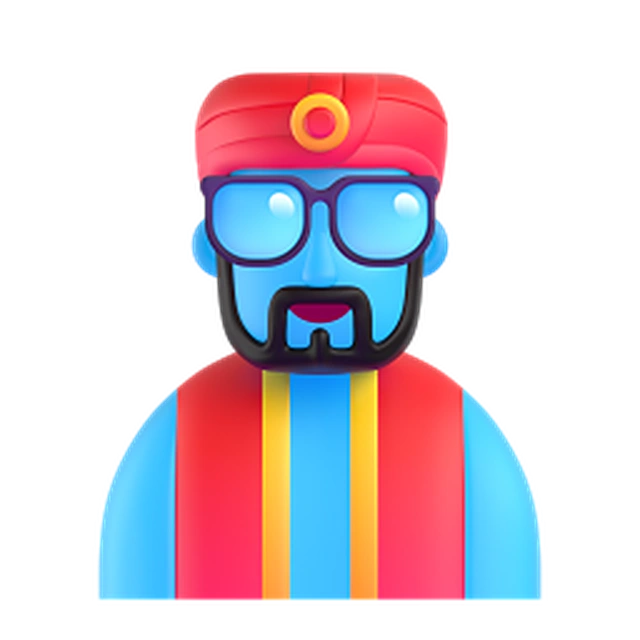
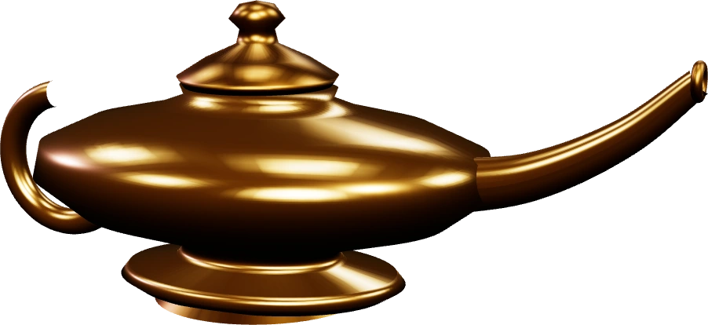
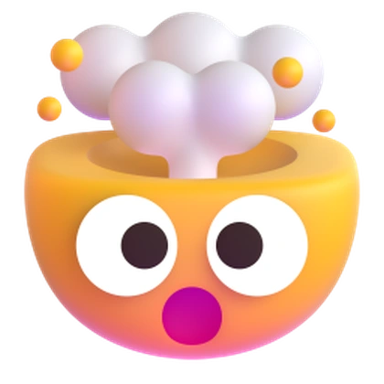
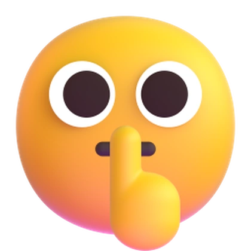

Este anuncio te llegó por menos de 5¢.
5¢
Quédate:
te enseño a lanzar
el tuyo sin gurú.

Te enseño todo por $$

NO
Ni pagar
más cursos.
Escala tu negocio25 h$1,997
Retargeting total9 h$347
Públicos avanzados14 h$597
Copy que convierte10 h$397
Píxel sin miedo6 h$197
Reels que venden8 h$297
$3,832 y 72 horasen promedio $639 por curso
Y creé…

5 años de experiencia,
metidos en una app.
Pero eso no es
lo más loco…

Lo lanzas
tú solo.
En 4 pasos:
1234
Conectas tu cuenta de Meta
Y lo que sigue,
casi nadie
te lo dice…

Judito
sí te lo dice:

El consejo de Judito
Di qué se llevan: “2 por 1 los martes”.
El consejo de Judito
Meta le pasa el presupuesto a la que gana.
El consejo de Judito
Los primeros días los números se ven mal: es normal.
$20al mes

Lo que cuesta una hamburguesa.
14 días
GRATIS
+ el presupuesto de tus anuncios, que pagas directo a Meta.
Si llegaste
hasta aquí,
pruébalo gratisjudomarketing.net/juditoads
¿Necesitas ayuda creando tu perfil de Meta?
Sígueme o escríbeme: